Gather
Assign settlers to resources and resource buildings to fund the war effort.
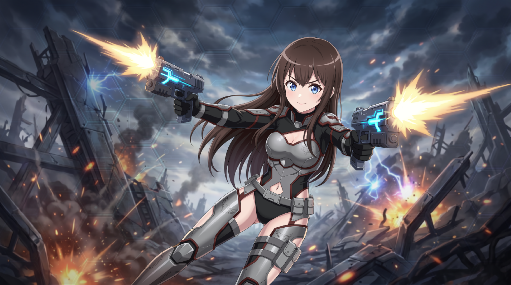
Fight on the front line. Build the war machine behind it. A solo-developed action-RTS where third-person combat, base building, a settler economy, hundreds of troops and an enemy that plans its own war all share one battlefield.
You play Annie, fighting alongside your party and a trained army while building the base that keeps it supplied. Between missions you return to the Asgard, a starship hub where the story plays out as a visual novel.
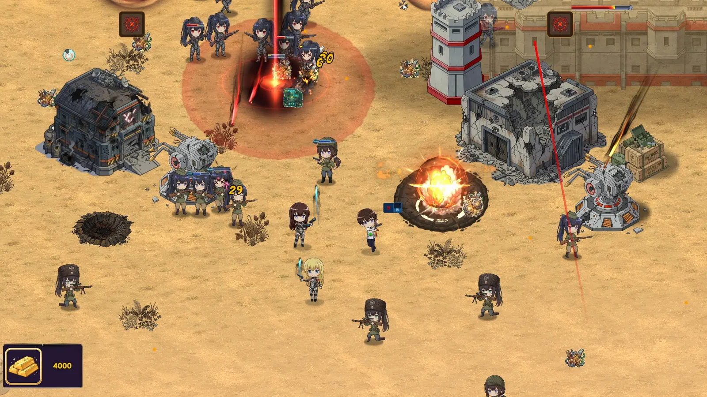
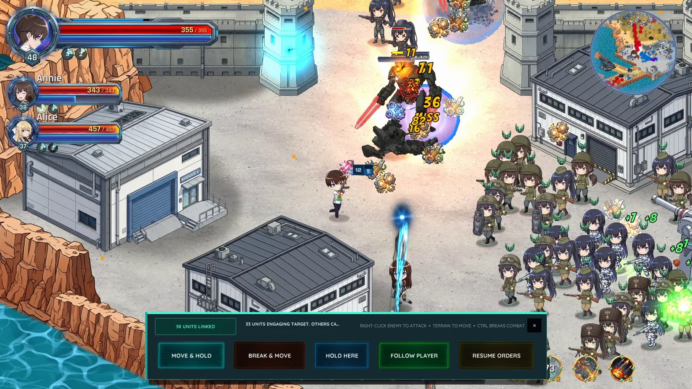
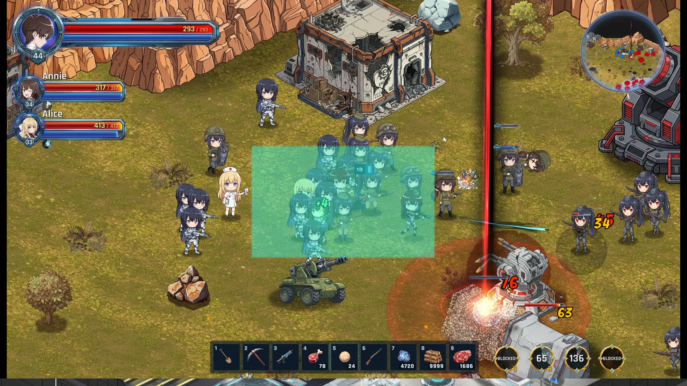
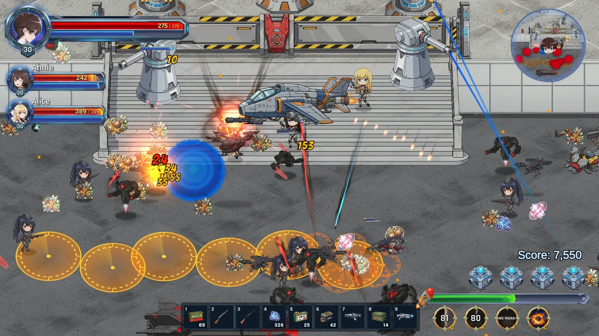
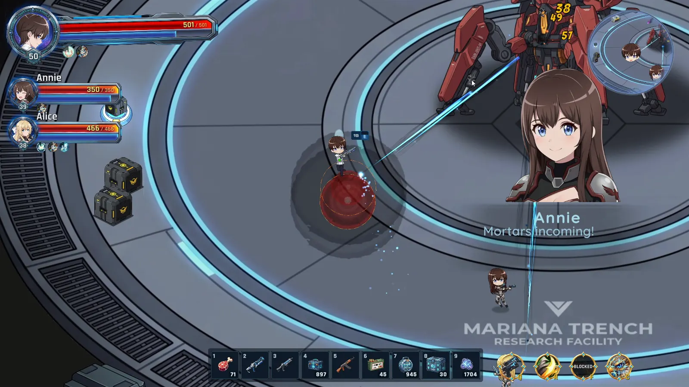
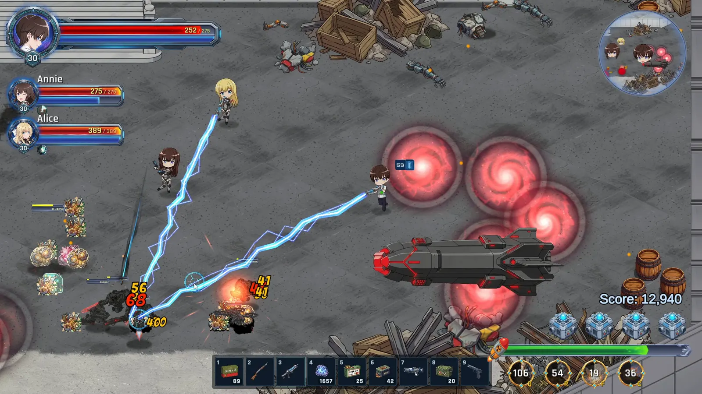
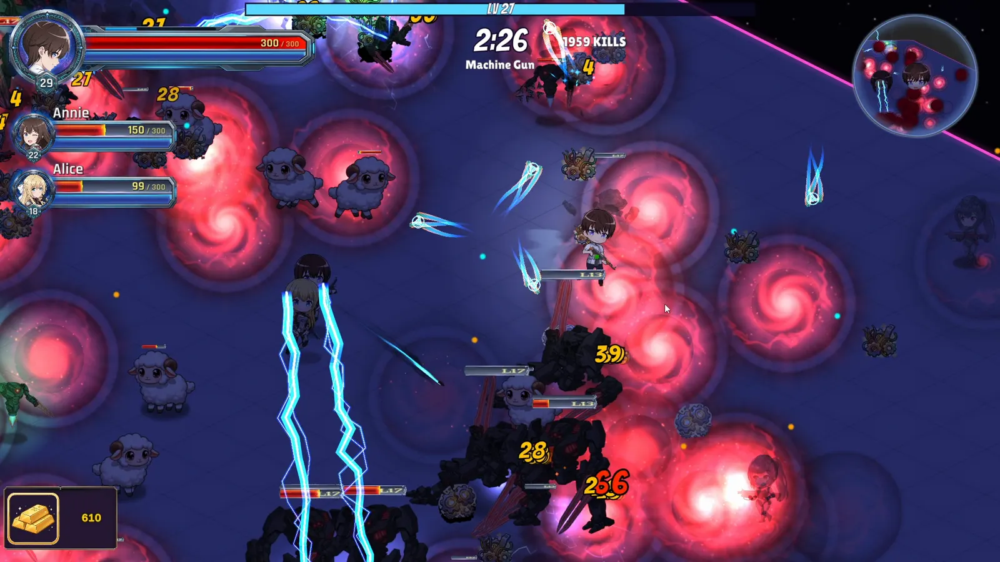
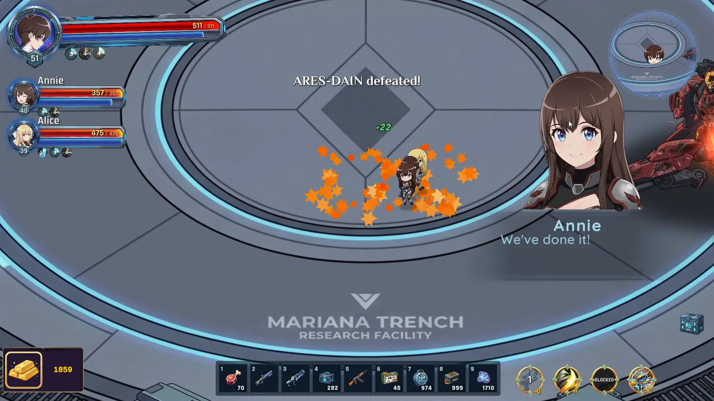
Steam store screenshots · click to enlarge
Iron Remnant is a solo project. I designed, programmed, drew, animated, wrote, localised, balanced, marketed and shipped it.
All code and all assets are mine. That covers the gameplay systems, AI and tools, plus the character sprites, CGs and the unit and enemy art, all animated in Spine 2D. I also did the shaders, level design, UI, audio and both Steam trailers.
The demo shipped for Steam Next Fest in October 2026. Between builds, I used telemetry and Unity Analytics to find where players struggled and retune missions and onboarding. The game is localised into Japanese, Traditional Chinese and Simplified Chinese.
Each layer feeds the next. Resources become infrastructure, infrastructure becomes an army, and battlefield wins push the campaign map forward.
Assign settlers to resources and resource buildings to fund the war effort.
Raise barracks, turrets, traps and production buildings under fire.
Train many troop types and direct squads in formation as the front line shifts.
Fight in person, call in airstrikes and orbitals, and dismantle an enemy that builds back.
Construction is part of the combat rhythm. Every investment is a choice between production, defence and immediate firepower, and the player makes it while standing on the battlefield.
Settlers gather resources and can be assigned to resource buildings, keeping the base and the army supplied through the mission.
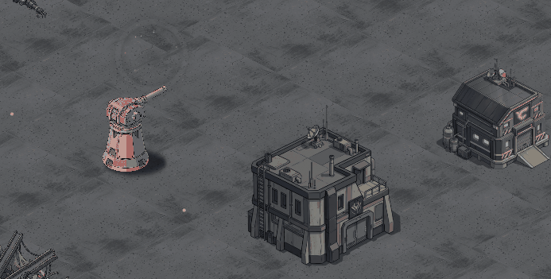
In-game resource loopMarquee selection, squad-aware orders and right-click attack orders against units and buildings.
Turn captured ground into a productive position with barracks, generators and resource buildings.
Turrets and traps that you place and upgrade blunt enemy pushes while you fight elsewhere.
Orbital barrages, airstrikes, dropships and buffs give the player high-impact answers to pressure.
Global pathfinding combines with local crowd behaviour, so a dense force can split around obstacles, queue through narrow gaps and spread out again on the far side, all from a single move order. Hundreds of independently animated Spine 2D troops keep making progress when they all want the same route.
The opposition isn't a wave spawner. An enemy base manager grows its own base, reads the battlefield and decides how to spend its forces.
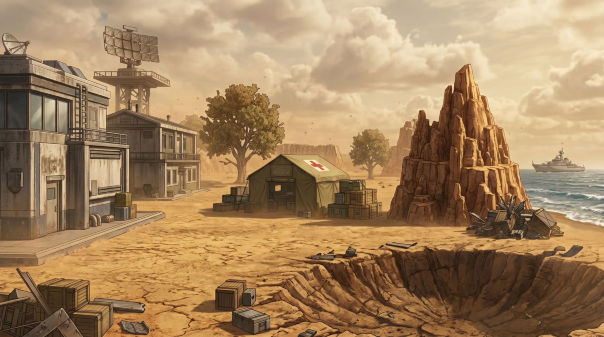
The player isn't a detached cursor. Annie moves through the same space as her troops and switches between direct action and tactical command without leaving the fight.
Many unique weapons, each with its own handling, plus weapon evolutions.
Airstrikes, orbital barrages, dropship reinforcements, buffs and more, placed by category.
Companions with selectable stances, threat-aware dodging and revives.
Shared ground-plane LOS, cover that blocks shots, and AI that flanks.
Carpet bombing and strafing runs that clear a lane through the enemy line.
Companions with their own stances and weapons fight beside you and revive you.
From pistols to tesla coils and plasma cannons, each with its own handling and evolutions.
Slingshot launch pads that move the player around the map mid-fight.
I created and animated ARES, programmed his attacks and encounter mechanics, and upgraded the party AI so companions recognise incoming attacks and dodge with deliberately human reaction delays. The boss audio, ability shaders and VFX are mine too.
Stats, gear, crafting and the shop turn progression into buildcraft. The same data drives the player-facing menus and the editor tools I use to balance them.
Between operations, the Asgard starship is home. Its rooms persist and can be upgraded, and its NPC residents go about their lives, interacting with the hub and with each other.
Pick which territory to attack next, from Syracuse Beachhead to Messina Fortress. Each one is a hand-built mission with its own objectives.
A custom VN system for character scenes and CGs, carrying tens of thousands of lines of dialogue.
Multi-step quest framework, quest log, in-game Field Guide and journal linking the hub and battlefield.
I built a mission telemetry recorder and viewer to balance missions from real runs, and used Unity Analytics on the public demo to find where players struggle.
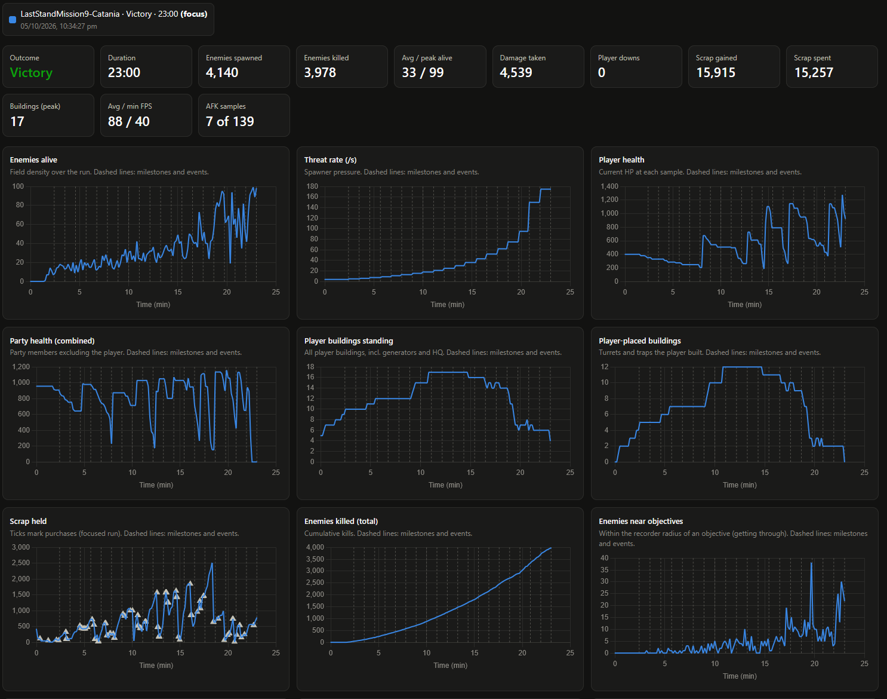
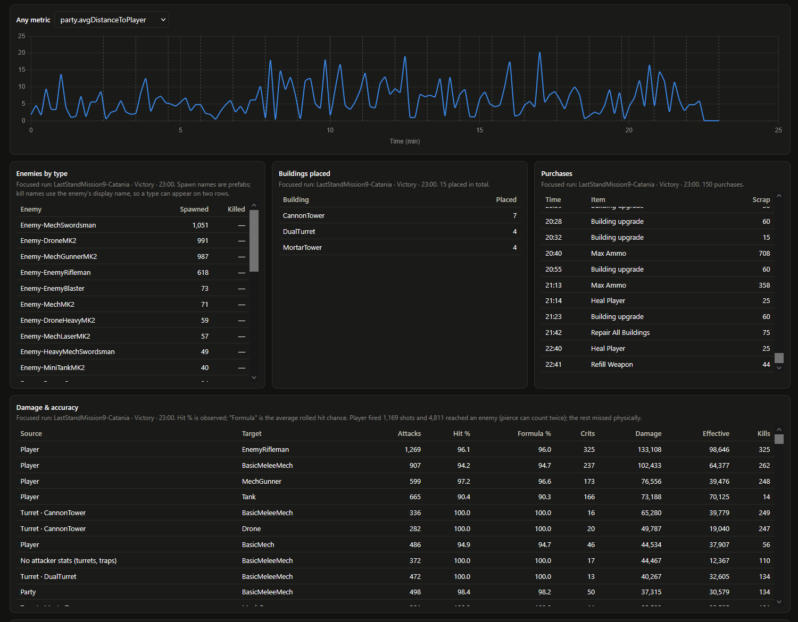
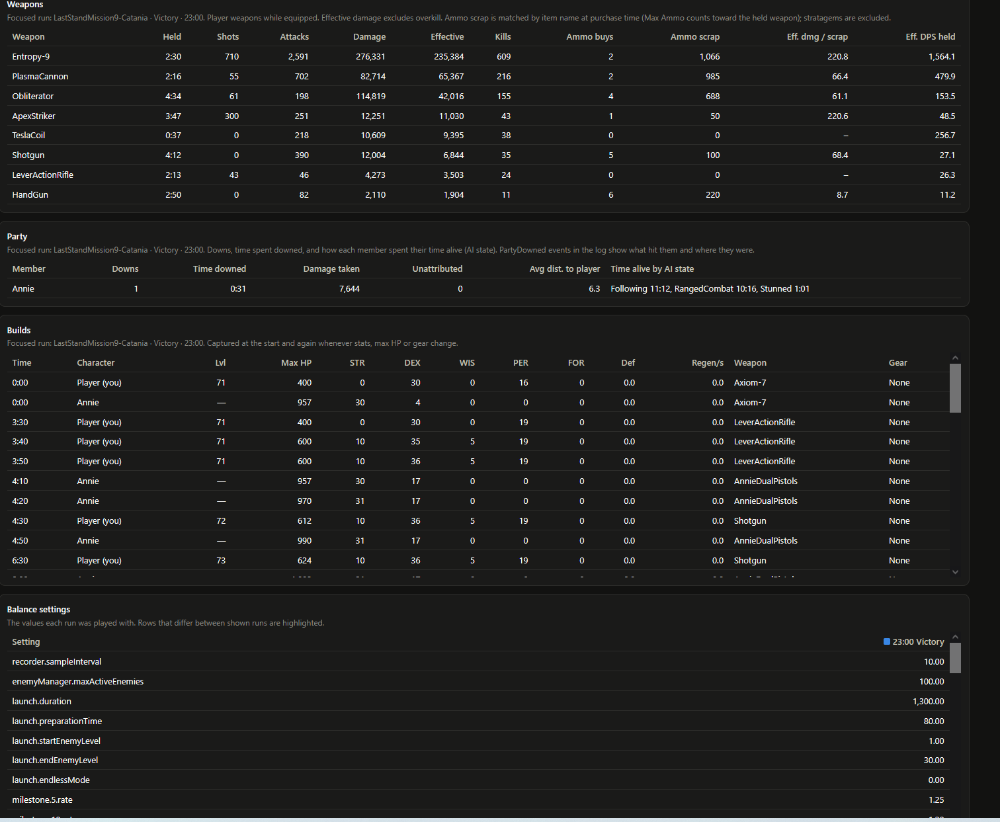
Every run records threat rate, enemies alive, player, party and building health, the scrap economy, purchases, weapon efficiency and party AI states. The settings each run was played with are stored alongside it, so runs can be compared side by side and differences are highlighted.
Custom analytics events, with an opt-out toggle in Options, report how each mission attempt played out. I used that data between demo builds to retune the prologue, onboarding and difficult missions.
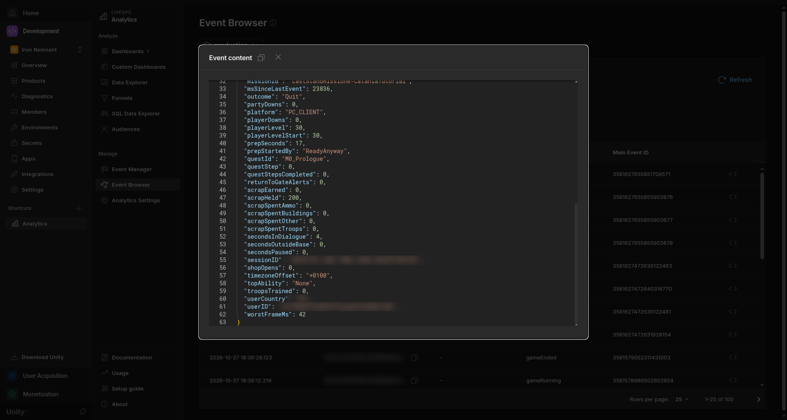
Unity Analytics event payloadNearly asset in the game is mine: characters, CGs, units, enemies, environments, effects and sound.
Every troop, enemy and character is drawn and rigged by me, with many unique troop and enemy types.
Character sprites and illustrated CGs for the visual novel, plus key art and Steam capsules.
Extensive map and level design, with the environment assets built for every mission.
Custom shaders for ability effects, terrain blending, dissolves and other battlefield VFX.
A music system that responds to gameplay intensity and mission state.
Arcade-style hits, crits, deaths and reward streaks, mixed with my own Python tooling.
A project this size needs more than runtime code. I built Unity editor tools and external pipelines to inspect state, balance progression, localise and market the game.
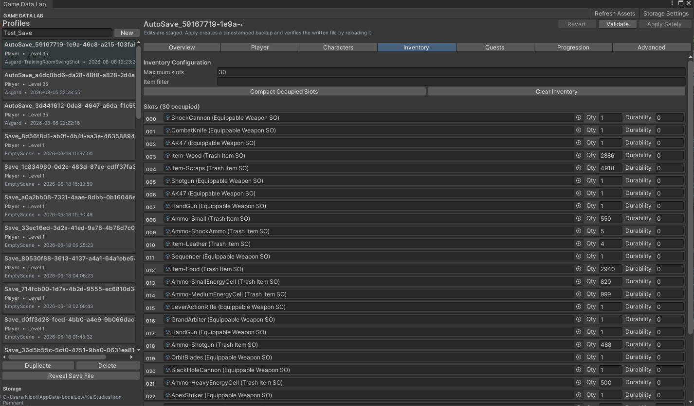
A central window for inspecting profiles, inventory, quests, scene flags and runtime state, with validation and guarded apply workflows.
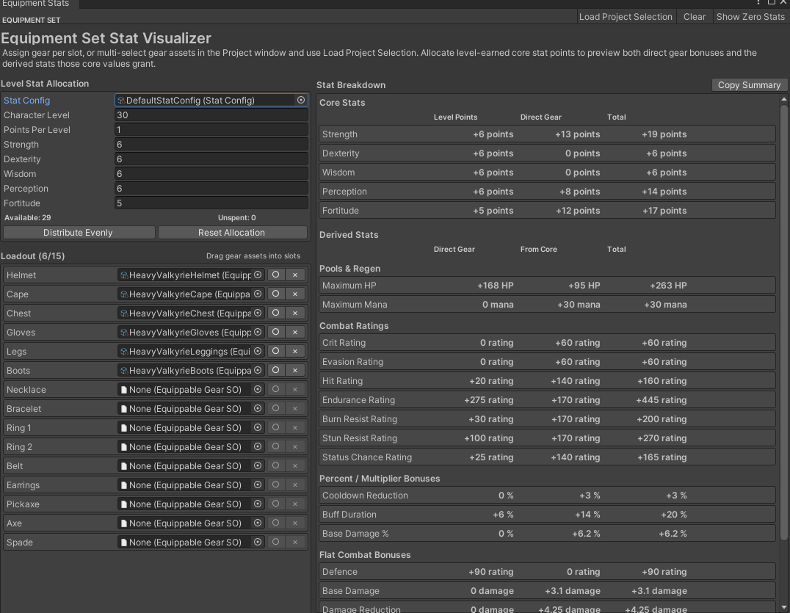
A balancing workspace for full gear sets, level allocations, direct and derived stats, and combat score.
Translation tooling and a CJK font atlas refill tool covering both TextMeshPro and UI Toolkit.
Highlight extraction from recordings, a beat-mapped rough-cut assembler, and exports for shorts and GIFs.
A stress-test scene that showed the bottleneck was physics trigger crowding, not Spine animation.
Editor builders that generate UI, the bestiary and fonts, so content is rebuilt by tools instead of hand-edited.
The longer trailer, the opening of the demo, and playthroughs of campaign missions.
A longer look at the story, combat, base building and the Asgard.
The demo's opening: a taster mission and gate defence that set the stakes before the tutorial.
Onboarding for troops, building, settlers and abilities, refined using demo analytics.
A full campaign mission playthrough from the Sicily campaign.
A full campaign mission playthrough from the demo.
A full campaign mission playthrough from the Sicily campaign.
A full campaign mission playthrough from the Sicily campaign.
A full campaign mission playthrough from the Sicily campaign.
The free demo is live on Steam. I'm continuing development on the full game.
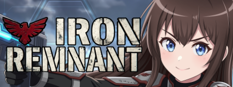
Iron Remnant's demo is out now on Steam. Play it, and wishlist the game to follow the full release.